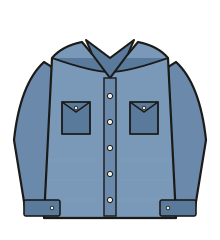

— Chapter 03-2 · Items
上半身の、青い布。
デニム地のシャツは、実は3種類あります。 シャンブレー、ダンガリー、デニムシャツ。 名前だけ聞くと混乱しますが、 織り方と重さで整理すれば、輪郭はハッキリします。

3種類の違い
| シャンブレー（Chambray） | 平織り。青い縦糸 × 白い横糸。軽い。シャツ専用 |
|---|---|
| ダンガリー（Dungaree） | 綾織り（デニムの親戚）。白い縦糸 × 青い横糸。色が反転 |
| デニムシャツ（Denim Shirt） | 通常のデニム地そのまま。厚い（6〜8oz）。重厚 |
ジーンズが青い縦糸 × 白い横糸の綾織りであるのに対し、 シャンブレーは平織り。 ダンガリーはデニムの色違い（青横糸）。 ——素材が別物なのに、見た目が似ているから混乱しがちです。
シャンブレーとは
シャンブレーの語源はフランスの都市Cambrai（カンブレ）。 19世紀後半からアメリカ海軍の制服として定着しました。 平織りなので軽くて通気性がよく、春夏のレイヤードに向きます。
織り密度が低いため、色落ちは穏やか。 ジーンズほど劇的には変化せず、 数年かけてじわじわと柔らかい青に変わっていきます。
⚓
アメリカ海軍の水兵服（work uniform）として長く支給されたため、
シャンブレーには「海の男の労働着」というイメージが付いています。
胸ポケット2つ・パール調のスナップボタンは、その名残。
ダンガリーとは
ダンガリーの語源はインドの地名Dongri（ドングリ）。 17世紀にイギリス東インド会社が運んだ「dungri」という厚手の粗布が起源です。
デニムが「青縦糸 × 白横糸」なのに対して、 ダンガリーは「白縦糸 × 青横糸」。 つまり表裏が反対。 結果として、色が少し淡くて、杢（もく）のようにマットに見えます。
重さで選ぶ
| 4〜5 oz | シャンブレーの主流。春夏用。さらり |
|---|---|
| 6〜7 oz | デニムシャツの標準。3シーズン着られる |
| 8〜10 oz | ヘビーデニムシャツ。羽織りとしても機能する |
| 12 oz 以上 | もはや軽ジャケット。秋冬の主戦力 |

JEAN SAYS
一枚目に選ぶなら5〜6ozのシャンブレー。
Tシャツの上に羽織って、袖まくるだけで決まる。
——ジーンズとの上下セットは、濃淡を必ず変えること。
同じ青だと、作業員に見える。
ディテールを読む
| チンストラップ | 襟元の小さな留め紐。古いワークシャツの名残 |
|---|---|
| フラップポケット | 蓋付き胸ポケット。海軍・ワーク系に多い |
| スナップボタン | パチッと留める金属ボタン。パール調はウェスタン起源 |
| ガゼット | 脇下の補強布（三角形）。古着の証明 |
| ユニオンチケット | 裾内側の労働組合タグ。1970年代以前のヴィンテージに |